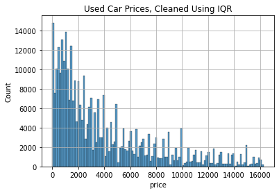
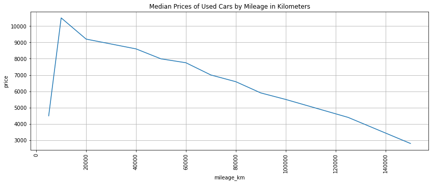

import pandas as pd
import numpy as np
import matplotlib.pyplot as plt
import seaborn as sns
Overview
In 2016, Kaggle user orgezleka scraped data about used car advertisements on eBay Kleinanzeigen, which is the eBay Classifieds website of Germany. The full dataset is still available on Used Cars Data (data.world 2016), with over 370,000 datapoints.
The project aims to answer the following questions:
- Which brands of the used cars are most expensive?
- Does a used car’s age affect its price?
- Does a used car’s mileage affect its price?
- Does the presence of unrepaired damage affect a car’s price?
More importantly, this project aims to showcase basic data cleaning procedures. Thus, even columns beyond the scope of the research questions will be considered for cleaning. The assumption is that analysis will eventually be performed on all columns.
Note
I wrote this notebook for the Dataquest course’s Guided Project: Exploring eBay Car Sales Data. The general project flow came from Dataquest. However, all of the text and code here are written by me unless stated otherwise.
Package Installs
Data Overview
Below is the information about each column in the dataset, taken from Used Cars Data (data.world 2016).
- dateCrawled : when this ad was first crawled, all field-values are taken from this date
- name : “name” of the car
- seller : private or dealer
- offerType
- price : the price on the ad to sell the car
- abtest
- vehicleType
- yearOfRegistration : at which year the car was first registered
- gearbox
- powerPS : power of the car in PS
- model
- kilometer : how many kilometers the car has driven
- monthOfRegistration : at which month the car was first registered
- fuelType
- brand
- notRepairedDamage : if the car has a damage which is not repaired yet
- dateCreated : the date for which the ad at ebay was created
- nrOfPictures : number of pictures in the ad
- postalCode
- lastSeenOnline : when the crawler saw this ad last online
Let us view the first 5 rows of the dataset below.
autos = pd.read_csv("./private/2021-05-20-BDC-Files/autos.csv", encoding = "Windows-1252")
autos.head()| dateCrawled | name | seller | offerType | price | abtest | vehicleType | yearOfRegistration | gearbox | powerPS | model | kilometer | monthOfRegistration | fuelType | brand | notRepairedDamage | dateCreated | nrOfPictures | postalCode | lastSeen | |
|---|---|---|---|---|---|---|---|---|---|---|---|---|---|---|---|---|---|---|---|---|
| 0 | 2016-03-24 11:52:17 | Golf_3_1.6 | privat | Angebot | 480 | test | NaN | 1993 | manuell | 0 | golf | 150000 | 0 | benzin | volkswagen | NaN | 2016-03-24 00:00:00 | 0 | 70435 | 2016-04-07 03:16:57 |
| 1 | 2016-03-24 10:58:45 | A5_Sportback_2.7_Tdi | privat | Angebot | 18300 | test | coupe | 2011 | manuell | 190 | NaN | 125000 | 5 | diesel | audi | ja | 2016-03-24 00:00:00 | 0 | 66954 | 2016-04-07 01:46:50 |
| 2 | 2016-03-14 12:52:21 | Jeep_Grand_Cherokee_"Overland" | privat | Angebot | 9800 | test | suv | 2004 | automatik | 163 | grand | 125000 | 8 | diesel | jeep | NaN | 2016-03-14 00:00:00 | 0 | 90480 | 2016-04-05 12:47:46 |
| 3 | 2016-03-17 16:54:04 | GOLF_4_1_4__3TÜRER | privat | Angebot | 1500 | test | kleinwagen | 2001 | manuell | 75 | golf | 150000 | 6 | benzin | volkswagen | nein | 2016-03-17 00:00:00 | 0 | 91074 | 2016-03-17 17:40:17 |
| 4 | 2016-03-31 17:25:20 | Skoda_Fabia_1.4_TDI_PD_Classic | privat | Angebot | 3600 | test | kleinwagen | 2008 | manuell | 69 | fabia | 90000 | 7 | diesel | skoda | nein | 2016-03-31 00:00:00 | 0 | 60437 | 2016-04-06 10:17:21 |
We can get additional information about each column using DataFrame.info().
autos.info()<class 'pandas.core.frame.DataFrame'>
RangeIndex: 371528 entries, 0 to 371527
Data columns (total 20 columns):
# Column Non-Null Count Dtype
--- ------ -------------- -----
0 dateCrawled 371528 non-null object
1 name 371528 non-null object
2 seller 371528 non-null object
3 offerType 371528 non-null object
4 price 371528 non-null int64
5 abtest 371528 non-null object
6 vehicleType 333659 non-null object
7 yearOfRegistration 371528 non-null int64
8 gearbox 351319 non-null object
9 powerPS 371528 non-null int64
10 model 351044 non-null object
11 kilometer 371528 non-null int64
12 monthOfRegistration 371528 non-null int64
13 fuelType 338142 non-null object
14 brand 371528 non-null object
15 notRepairedDamage 299468 non-null object
16 dateCreated 371528 non-null object
17 nrOfPictures 371528 non-null int64
18 postalCode 371528 non-null int64
19 lastSeen 371528 non-null object
dtypes: int64(7), object(13)
memory usage: 56.7+ MBThe dataset has 371,528 rows and 20 columns. Each column contains one of two types of data:
int64: 64-bit integersobject: text strings
Also, some columns have a non-null count smaller than the number of entries. This means that there are missing values in these columns. The column notRepairedDamagehas the most missing values.
Data Cleaning
Column Labels
As seen earlier, all of the column labels are written in camel case. This means that the first letter of each word is capitalized, like CamelCase.
Column labels should ideally be written in snake_case so that these are easier to use. Thus, I will convert all column labels to snake case.
cols = list(autos.columns)
new_cols = []
for label in cols:
# List of indices of the first letter of each word.
cap_inds = [0] + [index for index, character in enumerate(label) if character.isupper()]
# List of 2-tuples. Each tuple contains the start index of the current word
# and the start index of the next word.
zipped = list(zip(cap_inds, cap_inds[1:] + [None]))
# Split the label into a list of words.
# Make them lowercase and combine them with underscores.
word_list = [label[i:j] for i, j in zipped]
word_list = [word.lower() for word in word_list]
new_label = "_".join(word_list)
new_cols.append(new_label)
autos.columns = new_cols
autos.info()<class 'pandas.core.frame.DataFrame'>
RangeIndex: 371528 entries, 0 to 371527
Data columns (total 20 columns):
# Column Non-Null Count Dtype
--- ------ -------------- -----
0 date_crawled 371528 non-null object
1 name 371528 non-null object
2 seller 371528 non-null object
3 offer_type 371528 non-null object
4 price 371528 non-null int64
5 abtest 371528 non-null object
6 vehicle_type 333659 non-null object
7 year_of_registration 371528 non-null int64
8 gearbox 351319 non-null object
9 power_p_s 371528 non-null int64
10 model 351044 non-null object
11 kilometer 371528 non-null int64
12 month_of_registration 371528 non-null int64
13 fuel_type 338142 non-null object
14 brand 371528 non-null object
15 not_repaired_damage 299468 non-null object
16 date_created 371528 non-null object
17 nr_of_pictures 371528 non-null int64
18 postal_code 371528 non-null int64
19 last_seen 371528 non-null object
dtypes: int64(7), object(13)
memory usage: 56.7+ MBNow, all of the column labels are in snake case. However, I will manually change a few of them to make them neater.
convert = {
"power_p_s": "power_ps",
"nr_of_pictures": "num_pictures",
"year_of_registration": "year_reg",
"kilometer": "mileage_km",
"month_of_registration": "month_reg",
"not_repaired_damage": "damage",
}
autos.columns = pd.Series(autos.columns).replace(convert)
autos.info()<class 'pandas.core.frame.DataFrame'>
RangeIndex: 371528 entries, 0 to 371527
Data columns (total 20 columns):
# Column Non-Null Count Dtype
--- ------ -------------- -----
0 date_crawled 371528 non-null object
1 name 371528 non-null object
2 seller 371528 non-null object
3 offer_type 371528 non-null object
4 price 371528 non-null int64
5 abtest 371528 non-null object
6 vehicle_type 333659 non-null object
7 year_reg 371528 non-null int64
8 gearbox 351319 non-null object
9 power_ps 371528 non-null int64
10 model 351044 non-null object
11 mileage_km 371528 non-null int64
12 month_reg 371528 non-null int64
13 fuel_type 338142 non-null object
14 brand 371528 non-null object
15 damage 299468 non-null object
16 date_created 371528 non-null object
17 num_pictures 371528 non-null int64
18 postal_code 371528 non-null int64
19 last_seen 371528 non-null object
dtypes: int64(7), object(13)
memory usage: 56.7+ MBAll of the column labels are now easy to use.
Uninformative Columns
Next, we will look for columns filled with mostly 1 value. The other values in them are underrepresented, so we wouldn’t be able to compare groups reliably.
We can inspect the columns using DataFrame.describe().
autos.describe(include = "all")
# Include all columns, including text.| date_crawled | name | seller | offer_type | price | abtest | vehicle_type | year_reg | gearbox | power_ps | model | mileage_km | month_reg | fuel_type | brand | damage | date_created | num_pictures | postal_code | last_seen | |
|---|---|---|---|---|---|---|---|---|---|---|---|---|---|---|---|---|---|---|---|---|
| count | 371528 | 371528 | 371528 | 371528 | 3.715280e+05 | 371528 | 333659 | 371528.000000 | 351319 | 371528.000000 | 351044 | 371528.000000 | 371528.000000 | 338142 | 371528 | 299468 | 371528 | 371528.0 | 371528.00000 | 371528 |
| unique | 280500 | 233531 | 2 | 2 | NaN | 2 | 8 | NaN | 2 | NaN | 251 | NaN | NaN | 7 | 40 | 2 | 114 | NaN | NaN | 182806 |
| top | 2016-03-24 14:49:47 | Ford_Fiesta | privat | Angebot | NaN | test | limousine | NaN | manuell | NaN | golf | NaN | NaN | benzin | volkswagen | nein | 2016-04-03 00:00:00 | NaN | NaN | 2016-04-07 06:45:59 |
| freq | 7 | 657 | 371525 | 371516 | NaN | 192585 | 95894 | NaN | 274214 | NaN | 30070 | NaN | NaN | 223857 | 79640 | 263182 | 14450 | NaN | NaN | 17 |
| mean | NaN | NaN | NaN | NaN | 1.729514e+04 | NaN | NaN | 2004.577997 | NaN | 115.549477 | NaN | 125618.688228 | 5.734445 | NaN | NaN | NaN | NaN | 0.0 | 50820.66764 | NaN |
| std | NaN | NaN | NaN | NaN | 3.587954e+06 | NaN | NaN | 92.866598 | NaN | 192.139578 | NaN | 40112.337051 | 3.712412 | NaN | NaN | NaN | NaN | 0.0 | 25799.08247 | NaN |
| min | NaN | NaN | NaN | NaN | 0.000000e+00 | NaN | NaN | 1000.000000 | NaN | 0.000000 | NaN | 5000.000000 | 0.000000 | NaN | NaN | NaN | NaN | 0.0 | 1067.00000 | NaN |
| 25% | NaN | NaN | NaN | NaN | 1.150000e+03 | NaN | NaN | 1999.000000 | NaN | 70.000000 | NaN | 125000.000000 | 3.000000 | NaN | NaN | NaN | NaN | 0.0 | 30459.00000 | NaN |
| 50% | NaN | NaN | NaN | NaN | 2.950000e+03 | NaN | NaN | 2003.000000 | NaN | 105.000000 | NaN | 150000.000000 | 6.000000 | NaN | NaN | NaN | NaN | 0.0 | 49610.00000 | NaN |
| 75% | NaN | NaN | NaN | NaN | 7.200000e+03 | NaN | NaN | 2008.000000 | NaN | 150.000000 | NaN | 150000.000000 | 9.000000 | NaN | NaN | NaN | NaN | 0.0 | 71546.00000 | NaN |
| max | NaN | NaN | NaN | NaN | 2.147484e+09 | NaN | NaN | 9999.000000 | NaN | 20000.000000 | NaN | 150000.000000 | 12.000000 | NaN | NaN | NaN | NaN | 0.0 | 99998.00000 | NaN |
The top row gives the most frequent value in the column. The freq row tells exactly how often the top value occurs.
We can see that in the seller column, "privat" appears 371,525 times; this is close to the total number of entries. Also, in the offer_type column, "Angebot" appears 371,516 times.
Let us first check the unique values of the seller column.
autos["seller"].value_counts()privat 371525
gewerblich 3
Name: seller, dtype: int64In English, these mean “private” and “commercial.” It is likely that private listings are put up by individuals, whereas commercial listings are put up by used car dealer companies. Most listings scraped were apparently private.
One idea is to compare private listing prices to commercial listing prices. However, there are only 3 commercial listings, so this comparison would be unreliable. Therefore, we can drop this column.
autos.drop(columns = "seller", inplace = True)Secondly, let’s check the unique values of the offer_type column.
autos["offer_type"].value_counts()Angebot 371516
Gesuch 12
Name: offer_type, dtype: int64In English, these mean “offer” and “request.” This isn’t very informative. It could have something to do with the system of sending Offers to buyers in eBay. In any case, it doesn’t seem interesting to analyze, and there are only 12 request listings. Thus, we can also drop this column.
autos.drop(columns = "offer_type", inplace = True)Next, the numerical num_pictures column has a minimum of 0 and a maximum of 0.
autos["num_pictures"].describe()count 371528.0
mean 0.0
std 0.0
min 0.0
25% 0.0
50% 0.0
75% 0.0
max 0.0
Name: num_pictures, dtype: float64This means that none of the listings for used cars were found to have pictures. This data may be true or it may have come from an error, but either way, it is not useful. Thus, it will be dropped.
autos.drop(columns = "num_pictures", inplace = True)Outliers in Numerical Columns
Next, we inspect the ranges of numerical columns to see if there are any unusually high or low values.
autos.describe(include = np.number)| price | year_reg | power_ps | mileage_km | month_reg | postal_code | |
|---|---|---|---|---|---|---|
| count | 3.715280e+05 | 371528.000000 | 371528.000000 | 371528.000000 | 371528.000000 | 371528.00000 |
| mean | 1.729514e+04 | 2004.577997 | 115.549477 | 125618.688228 | 5.734445 | 50820.66764 |
| std | 3.587954e+06 | 92.866598 | 192.139578 | 40112.337051 | 3.712412 | 25799.08247 |
| min | 0.000000e+00 | 1000.000000 | 0.000000 | 5000.000000 | 0.000000 | 1067.00000 |
| 25% | 1.150000e+03 | 1999.000000 | 70.000000 | 125000.000000 | 3.000000 | 30459.00000 |
| 50% | 2.950000e+03 | 2003.000000 | 105.000000 | 150000.000000 | 6.000000 | 49610.00000 |
| 75% | 7.200000e+03 | 2008.000000 | 150.000000 | 150000.000000 | 9.000000 | 71546.00000 |
| max | 2.147484e+09 | 9999.000000 | 20000.000000 | 150000.000000 | 12.000000 | 99998.00000 |
The following unusual characteristics are noticeable:
price: The minimum price is 0 (free) and the maximum price is larger than 2 billion.year_reg: The earliest year of registration is 1000, and the latest year is 9999.power_ps: The lowest power is 0 PS. The highest is 20,000 PS, which is much higher than the 75th percentile (only 150 PS).month_reg: The month numbers range from 0 to 12, not 1 to 12.
All of these columns shall be cleaned of inaccurate data.
Price in Euros
It was seen that the minimum value for price data was 0, and the maximum is over 2,000,000,000. Since this data was scraped from the German eBay, we can assume that these prices are in euros.
Both the minimum and maximum values seem to be very unrealistic for the price of a used car, so we want to clean this data.
Let us create a frequency table of the prices. We will first sort it by price, ascending.
autos["price"].value_counts().sort_index()0 10778
1 1189
2 12
3 8
4 1
...
32545461 1
74185296 1
99000000 1
99999999 15
2147483647 1
Name: price, Length: 5597, dtype: int64Two things are noticeable:
- There are over 10,000 instances of 0 euro prices.
- There are several extremely high outliers, not just the one above 2 billion.
Since it is unlikely that the cars are actually free, 0 may represent missing values. As for the high outliers, these may have resulted from inaccurate scraping.
The next question is, what is the most frequent price value? Is it 0?
autos["price"].value_counts().sort_values(ascending = False)0 10778
500 5670
1500 5394
1000 4649
1200 4594
...
2610 1
20620 1
16689 1
9964 1
10985 1
Name: price, Length: 5597, dtype: int64Indeed, the most frequent price is 0, which makes it likely that it represents missing values. The next most frequent prices are 500, 1500, and 1000, most likely because these are easy for buyers to remember.
Now that we know about the low and high outliers, we can clean rows using the interquartile range or IQR. The IQR is bounded by the 25th and 75th percentiles. Reasonable lower and upper bounds can be approximated by multiplying the IQR length by 1.5 and:
- subtracting it from the 25th percentile
- adding it to the 75th percentile
Reference: Detection and Removal of Outliers in Python – An Easy to Understand Guide
Below, I use this method to find a lower and upper bound, and I drop rows outside of them.
autos_desc = autos["price"].describe()
q25, q75 = autos_desc[["25%", "75%"]]
iqr = q75 - q25
lower_bound = q25 - 1.5 * iqr
upper_bound = q75 + 1.5 * iqr
autos = autos.loc[autos["price"].between(lower_bound, upper_bound)]
print("Lower bound:", lower_bound)
print("Upper bound:", upper_bound)
print("New shape:", autos.shape)Lower bound: -7925.0
Upper bound: 16275.0
New shape: (343420, 17)Now, there are 343,420 rows remaining in the dataset. This is still quite large; not too many datapoints were removed.
Let us view the new distribution of prices in a histogram.
ax = sns.histplot(
data = autos,
x = "price",
)
ax.set_title("Used Car Prices, Cleaned Using IQR")
ax.grid(True)
plt.show()
Unfortunately, since the lower bound was negative, unrealistically low prices close to 0 were still accepted within the range.
Remember from earlier that the 2nd most frequent price value was found to be 500 euros. This makes it likely that these were correct prices, rather than incorrectly scraped values. Thus, let us keep all price values greater than or equal to 500.
autos = autos.loc[autos["price"] >= 500]
autos.shape(307358, 17)Now, 307,358 datapoints remain. Let us look at the final distribution of prices:
ax = sns.histplot(
data = autos,
x = "price",
)
ax.set_title("Used Car Prices, Cleaned of Low Values")
ax.grid(True)
plt.show()The distribution is still right-skewed, but at least the price range in the dataset is more reasonable now.
Metric Horsepower
We saw earlier that some power values were at 0 PS, and others were as high as 20,000 PS.
Note
A measure of 1 PS (metric horsepower) is equivalent to 0.98 HP (horsepower). (Deriquito 2020)
autos["power_ps"].describe()count 307358.000000
mean 112.551842
std 191.557378
min 0.000000
25% 75.000000
50% 105.000000
75% 143.000000
max 20000.000000
Name: power_ps, dtype: float64Above are the new descriptive statistics for metric horsepower, after the transformations that we have done recently.
According to “What is the Average Car Horsepower?” (2021), cars usually have a horsepower of 100 HP to 400 HP, though some have less. Faster cars have 400 HP to 1,000 HP, and some supercars have over 1,000 HP. The equivalent values in PS would be slightly higher.
Considering that these are used cars, it is unlikely for them to be very fast much less to be supercars. Thus, we will keep cars with metric horsepowers between 50 and 450, in order to take as many of the realistic values as possible.
autos = autos.loc[autos["power_ps"].between(50, 450)]
autos["power_ps"].describe()count 274514.000000
mean 121.166931
std 50.535320
min 50.000000
25% 82.000000
50% 114.000000
75% 150.000000
max 450.000000
Name: power_ps, dtype: float64Let us view the distribution of power values in a histogram.
ax = sns.histplot(
data = autos,
x = "power_ps",
)
ax.set_title("Metric Horsepower (PS) of Used Cars")
ax.grid(True)
plt.show()Like the price data, the power data are right-skewed. Lower values are more frequent. Still, we managed to capture most (274,514) of the datapoints using this range.
Year of Registration
Earlier, we noticed that the years of registration ranged from 1000 to 9999.
autos["year_reg"].describe()count 274514.000000
mean 2003.658039
std 29.529992
min 1000.000000
25% 1999.000000
50% 2004.000000
75% 2007.000000
max 9999.000000
Name: year_reg, dtype: float64Logically, the years of registration should only range from when automobiles were first mass-produced, in the 1800s or 1900s (Encyclopedia Britannica), to the year when the ads were last seen by the web crawler.
We can know when the ads were last seen using the last_seen column of the dataset. The dates are shown as strings with years first, so we can sort them in descending order to find the most recent date.
autos["last_seen"].sort_values(ascending = False)343211 2016-04-07 14:58:51
5069 2016-04-07 14:58:50
72231 2016-04-07 14:58:50
62402 2016-04-07 14:58:50
122068 2016-04-07 14:58:50
...
244077 2016-03-05 14:35:28
177326 2016-03-05 14:25:59
136842 2016-03-05 14:15:39
275196 2016-03-05 14:15:16
311225 2016-03-05 14:15:08
Name: last_seen, Length: 274514, dtype: objectIt looks like all of the ads were last seen in 2016, so the cars could not have been registered beyond that year.
Therefore, a reasonable range of years would be from 1900 to 2016. Let us keep all rows within this range.
autos = autos.loc[autos["year_reg"].between(1900, 2016)]
autos["year_reg"].describe()count 264977.000000
mean 2002.977877
std 6.097207
min 1910.000000
25% 1999.000000
50% 2003.000000
75% 2007.000000
max 2016.000000
Name: year_reg, dtype: float64Now, the years of registration range from 1910 to 2016. There are also 264,977 datapoints remaining.
Months of Registration
Lastly, we noticed that the months of registration included integers from 0 to 12, not 1 to 12. Let us make a discrete histogram in order to understand the distribution.
ax = sns.histplot(
data = autos,
x = "month_reg",
discrete = True,
)
ax.set_title("Used Cars' Months of Registration")
ax.grid(True)
plt.show()The graph above shows that 0 is the least frequent value, appearing under 15,000 times. It seems very likely that it is a placeholder for unknown months. Therefore, we can remove rows with month 0.
autos = autos.loc[autos["month_reg"] >= 1]
autos["month_reg"].describe()count 251198.000000
mean 6.396237
std 3.346424
min 1.000000
25% 4.000000
50% 6.000000
75% 9.000000
max 12.000000
Name: month_reg, dtype: float64Missing Values
Now, we shall deal with the null values in the dataset. First, how many null values are there per column?
autos.isnull().sum()date_crawled 0
name 0
price 0
abtest 0
vehicle_type 5871
year_reg 0
gearbox 3103
power_ps 0
model 7422
mileage_km 0
month_reg 0
fuel_type 9057
brand 0
damage 28718
date_created 0
postal_code 0
last_seen 0
dtype: int64There are thousands of missing values for the vehicle type, gearbox, model, fuel type, and presence of damage. None of these can be easily determined from other columns.
If we were to remove all rows with these missing values, we would be left with:
autos.dropna().shape(208538, 17)We would have 208,538 rows left. This is just over half of the original number of datapoints we started with, 371,528.
This project is meant to showcase data cleaning, and we are assuming that all of the columns in the dataset will be used for analysis. Thus, we will have to delete all rows with missing values.
autos.dropna(inplace = True)Below are the final descriptive statistics for the dataset after all of the cleaning.
autos.describe(include = "all")| date_crawled | name | price | abtest | vehicle_type | year_reg | gearbox | power_ps | model | mileage_km | month_reg | fuel_type | brand | damage | date_created | postal_code | last_seen | |
|---|---|---|---|---|---|---|---|---|---|---|---|---|---|---|---|---|---|
| count | 208538 | 208538 | 208538.000000 | 208538 | 208538 | 208538.000000 | 208538 | 208538.000000 | 208538 | 208538.000000 | 208538.000000 | 208538 | 208538 | 208538 | 208538 | 208538.000000 | 208538 |
| unique | 177458 | 114617 | NaN | 2 | 8 | NaN | 2 | NaN | 248 | NaN | NaN | 7 | 39 | 2 | 98 | NaN | 116677 |
| top | 2016-04-02 22:54:55 | BMW_318i | NaN | test | limousine | NaN | manuell | NaN | golf | NaN | NaN | benzin | volkswagen | nein | 2016-04-03 00:00:00 | NaN | 2016-04-07 09:45:41 |
| freq | 5 | 616 | NaN | 108258 | 62894 | NaN | 166213 | NaN | 17505 | NaN | NaN | 136145 | 44157 | 189720 | 8271 | NaN | 14 |
| mean | NaN | NaN | 4984.662522 | NaN | NaN | 2003.205953 | NaN | 122.635031 | NaN | 128250.990227 | 6.381225 | NaN | NaN | NaN | NaN | 51907.756020 | NaN |
| std | NaN | NaN | 3990.028529 | NaN | NaN | 5.696916 | NaN | 50.515054 | NaN | 35781.848172 | 3.350349 | NaN | NaN | NaN | NaN | 25766.228717 | NaN |
| min | NaN | NaN | 500.000000 | NaN | NaN | 1937.000000 | NaN | 50.000000 | NaN | 5000.000000 | 1.000000 | NaN | NaN | NaN | NaN | 1067.000000 | NaN |
| 25% | NaN | NaN | 1749.000000 | NaN | NaN | 2000.000000 | NaN | 85.000000 | NaN | 125000.000000 | 3.000000 | NaN | NaN | NaN | NaN | 31319.000000 | NaN |
| 50% | NaN | NaN | 3750.000000 | NaN | NaN | 2004.000000 | NaN | 116.000000 | NaN | 150000.000000 | 6.000000 | NaN | NaN | NaN | NaN | 51371.000000 | NaN |
| 75% | NaN | NaN | 7300.000000 | NaN | NaN | 2007.000000 | NaN | 150.000000 | NaN | 150000.000000 | 9.000000 | NaN | NaN | NaN | NaN | 72649.000000 | NaN |
| max | NaN | NaN | 16270.000000 | NaN | NaN | 2016.000000 | NaN | 450.000000 | NaN | 150000.000000 | 12.000000 | NaN | NaN | NaN | NaN | 99998.000000 | NaN |
Data Transformation
Strings to Datetime Objects
As we saw earlier, the date_crawled, date_created, and last_seen columns contain dates and times in string format. It would be better to store these as datetime objects so that each part (year, month, etc.) can be accessed in analysis.
For this section, I used “Convert the column type from string to datetime format in Pandas dataframe” (2020) as a reference.
First, though, we have to make a format string so that the numbers can be parsed properly.
autos[["date_crawled", "date_created", "last_seen"]].head()| date_crawled | date_created | last_seen | |
|---|---|---|---|
| 3 | 2016-03-17 16:54:04 | 2016-03-17 00:00:00 | 2016-03-17 17:40:17 |
| 4 | 2016-03-31 17:25:20 | 2016-03-31 00:00:00 | 2016-04-06 10:17:21 |
| 5 | 2016-04-04 17:36:23 | 2016-04-04 00:00:00 | 2016-04-06 19:17:07 |
| 6 | 2016-04-01 20:48:51 | 2016-04-01 00:00:00 | 2016-04-05 18:18:39 |
| 10 | 2016-03-26 19:54:18 | 2016-03-26 00:00:00 | 2016-04-06 10:45:34 |
All 3 columns seem to follow the same format:
{4 digit year}-{2 digit month}-{2 digit day} {24-hour time hour}:{minute}:{second}
The equivalent format string is below.
format_str = "%Y-%m-%d %H:%M:%S"We can use this string to parse the dates. This can be done quickly by using the pd.to_datetime() vectorized function, instead of using a for-loop with the datetime module.
autos["date_crawled"] = pd.to_datetime(
autos["date_crawled"],
format = format_str,
)
autos["date_crawled"]3 2016-03-17 16:54:04
4 2016-03-31 17:25:20
5 2016-04-04 17:36:23
6 2016-04-01 20:48:51
10 2016-03-26 19:54:18
...
371516 2016-04-04 09:57:12
371517 2016-03-28 13:48:07
371520 2016-03-19 19:53:49
371524 2016-03-05 19:56:21
371525 2016-03-19 18:57:12
Name: date_crawled, Length: 208538, dtype: datetime64[ns]We can see that the values look similar to how they looked before, but the dtype is now datetime64[ns].
For example, we can now access the month and day from the datetime objects.
autos["date_crawled"].iloc[0].month3autos["date_crawled"].iloc[0].day17We can see that the date in the first row has a month of 3 (March) and a day of 17.
Let us do the same for the other 2 date columns.
autos["date_created"] = pd.to_datetime(
autos["date_created"],
format = format_str,
)
autos["last_seen"] = pd.to_datetime(
autos["last_seen"],
format = format_str,
)
autos[["date_crawled", "date_created", "last_seen"]].describe(
datetime_is_numeric = True,
)| date_crawled | date_created | last_seen | |
|---|---|---|---|
| count | 208538 | 208538 | 208538 |
| mean | 2016-03-21 13:39:21.839721984 | 2016-03-20 19:44:12.604321536 | 2016-03-30 09:43:36.598633984 |
| min | 2016-03-05 14:06:23 | 2015-08-07 00:00:00 | 2016-03-05 14:15:16 |
| 25% | 2016-03-13 11:06:28 | 2016-03-13 00:00:00 | 2016-03-23 20:52:41.500000 |
| 50% | 2016-03-21 18:46:44.500000 | 2016-03-21 00:00:00 | 2016-04-04 14:39:49.500000 |
| 75% | 2016-03-29 15:36:22.500000 | 2016-03-29 00:00:00 | 2016-04-06 11:45:07 |
| max | 2016-04-07 14:36:58 | 2016-04-07 00:00:00 | 2016-04-07 14:58:51 |
We can see that since the 3 columns are in datetime format, they are now treated as numerical values. They have a mean and a list of percentiles.
Data transformation is done, so we can move on to data analysis.
Data Analysis
Statistical analyses with hypothesis testing are outside of the scope of this project, since it is centered on data cleaning. Thus, I will perform some simple aggregates and visualize them in graphs.
Most Expensive Car Brands
Below, a bar graph shows each car brand and the median price. The mean is not used because we know that the price data are right-skewed, not normal.
plt.figure(figsize = (14, 5))
ax = sns.barplot(
data = autos,
x = "brand",
y = "price",
estimator = np.median,
ci = None,
)
plt.title("Median Prices of Used Cars by Brand")
plt.grid(True)
plt.xticks(rotation = 90)
plt.show()The graph shows that Porsche has the highest median price of used cars, at almost 12,000 euros. This is followed by Mini, Land Rover, and Jeep.
Used Car Prices by Age
The line plot below shows the relationship between a car’s year of registration (later -> newer) and the median price.
plt.figure(figsize = (14, 5))
ax = sns.lineplot(
data = autos,
x = "year_reg",
y = "price",
estimator = np.median,
ci = None,
)
plt.title("Median Prices of Used Cars by Year of Registration")
plt.grid(True)
plt.xticks(rotation = 90)
plt.show()The line plot shows that used car prices are lowest when the year of registration is in the mid-1990s.
To the right of the minimum, as the year of registration gets later, the median price steadily becomes higher. This makes sense because newer cars would have a higher value, even if they’re used.
On the other hand, to the left of the minimum, the median price increases (albeit erratically) as the year of registration gets earlier. This suggests that very old cars are considered to be valuable because they are rare. It is likely that the avid car collectors are the ones who pay such high prices for these cars.
Used Car Prices by Mileage
The line plot below shows the relationship between used cars’ mileage in kilometers and the median price.
plt.figure(figsize = (14, 5))
ax = sns.lineplot(
data = autos,
x = "mileage_km",
y = "price",
estimator = np.median,
ci = None,
)
plt.title("Median Prices of Used Cars by Mileage in Kilometers")
plt.grid(True)
plt.xticks(rotation = 90)
plt.show()
As expected, price decreases as mileage increases. What is unexpected is that there is a sharp increase in price from around 500 km to 1000 km. This was likely caused by an outlier datapoint which had a low mileage and a low price.
Effect of Presence of Damage on Used Car Price
Lastly, we will analyze the effect of the presence of unrepaired damage on the median price of used cars.
ax = sns.barplot(
data = autos,
x = "damage",
y = "price",
estimator = np.median,
ci = None,
)
plt.title("Effect of Presence of Damage on Median Used Car Price")
plt.grid(True)
plt.xticks(rotation = 90)
plt.show()It can be seen that the median price of used cars without damage is 4000 euros. The median price is 1500 euros for those with unrepaired damage.
Therefore, cars with damage generally have lower prices. This makes sense because if the buyer plans to drive the car, they must shoulder the expense of repairing it.
Conclusion
In this project, we did cleaning, transformation, and simple analyses on data about used cars. Below are the insights we gained with regards to each research question. Note that prices were aggregated using the median, not the mean.
- Which brands of the used cars are most expensive?
The top 4 most expensive brands of used cars are Porsche, Mini, Land Rover, and Jeep (descending order).
- Does a used car’s age affect its price?
Yes. Cars registered in the mid-1990s have the lowest prices, with a median of 1000 euros.
As cars get newer from that point, their median price increases. As cars get older from the same point, their median price also increases. Very old cars are rare and therefore valuable to collectors.
- Does a used car’s mileage affect its price?
Yes, as mileage increases, price decreases.
- Does the presence of unrepaired damage affect a car’s price?
Yes, the median price of damaged used cars is much lower than that of cars without damage.
Thanks for reading!